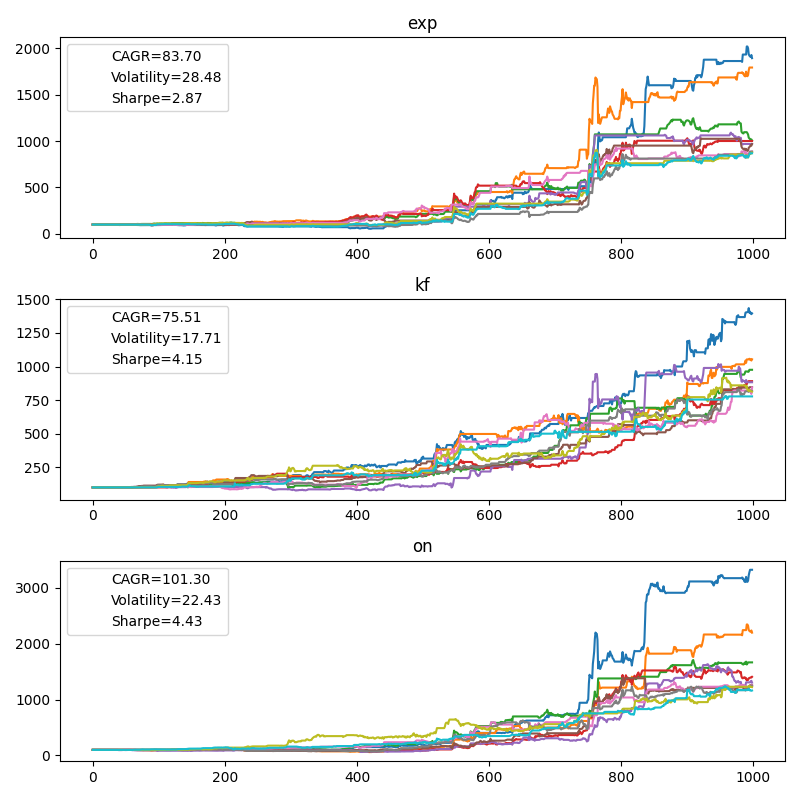
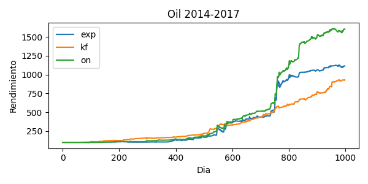
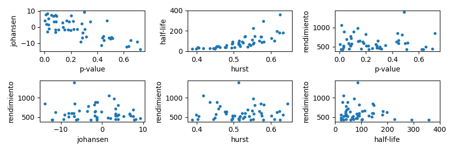
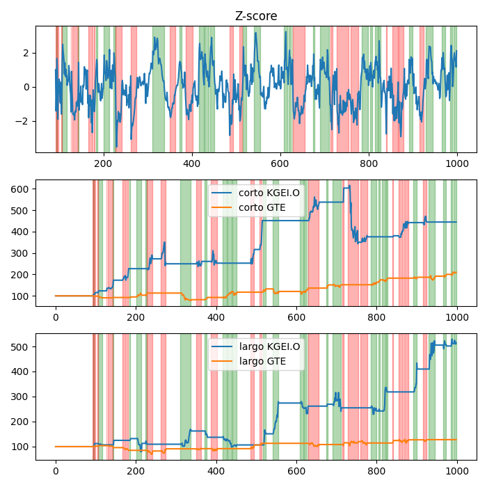
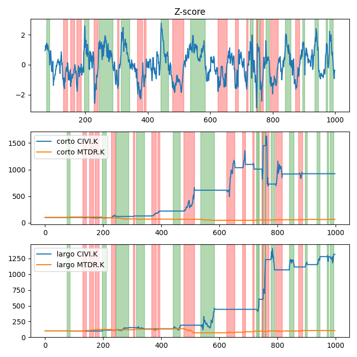
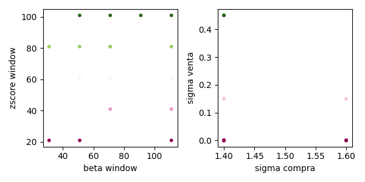

Hyper-optimizacion de pares de activos. Reporte 03/06/25
Table of Contents
1. Seleccion de pares de acuerdo al rendimiento
Dado un sector, se realizan todas las combinaciones de pares posibles.
Estos pares se utilizan para calcular un z-score entre ellos y para realizar una estrategia de entrenamiento de inversiones. Los 10-20 pares con mejor rendimiento son seleccionados para el periodo de testing.
2. Optimizacion de hyper-parametros
Para todas las combinaciones de pares posibles se propone un rango de hiperparametros posibles, periodo de la ventana movil de los promedios del spread (o de la exponencial), periodo de computo del beta. Tambien los umbrales para entrar a una posicion \(\sigma_{compra}\) y para salir \(\sigma_{venta}\).
Se realizan combinaciones de estos 4 parametros con conjuntos discretos (entre 400-1000 experimentos) y para cada par se estima el valor optimo de los parametros.
Que se utiliza como funcion de costo?
- rendimiento neto del activo para tomar los parametros optimos de cada par.
- Sharpe ratio? podria obtener pares mas robustos a la hora del testing.
3. Experimentos
- ON. Promedio de ventana movil y beta con regresion lineal.
- KF. Promedio de ventana movil y beta con filtro de Kalman.
- EXP. Spread con promedio exponential y beta con regresion lineal.
4. Resultados
4.1. Rendimientos
Se seleccionan los 10 mejores pares y se distribuye equitativamente la inversion.


Caveats:
- Este es el periodo de entrenamiento, NO hay testing. Aun cuando el esquema es on-line operativo, los pares se seleccionan por su rendimiento en el periodo. No se ha realizado un periodo de testing (TODO).
- Repeticion de activos en los pares. En los casos que se analizaron el sistema se concentra en acciones formadas con distintos pares esto le quita robustez a la hora del testing.
4.2. Medidas de estacionaridad, vida media etc vs rendimiento.

Este analisis se realiza con los 50 activos que obtuvieron mayor rendimiento en el KF. Se muestran los scatterplot del johansen 95% vs p-value. Como se esperaba, se ve una clara correlacion los valores johansen positivos corresponden a p-values \(<\) 0.3, aunqeu quizas johansen 90% seria mas equiparable a p-value.
En el caso de hurst vs half-life tambien queda claro que un hurst menor a .5 corresponde a bajos valores de half-life lo cual era lo esperable.
Cuan correlacionados estan los rendimientos con distintas medidas de estacionaridad del spread? En principio poco podemos decir, con respecto a johansen tenemos buenos rendimientos con positivos y negativos. Tampoco el Hurst nos esta dando informacion relevante, existen varios pares de activos con exponente de Hurst \(> 0.5\) con buen rendimiento.
Con respecto a los p-values hay en principio mayor cantidad de activos con grandes rendimientos cuyo p-value es \(< 0.3\). Tambien se puede ver que los pares de activos con vidas medias menores a 100 tienen buen rendimiento aunque por supuesto esto no indica una relacion causal.
4.3. Pares con mejores rendimientos

Operaciones para el KF y los rendimientos en las posiciones en corto y largo

Operaciones para el EXP y los rendimientos en las posiciones en corto y largo
4.4. Parametros optimos

Parametros optimos para los 50 mejores activos en el experimento EXP.
No se puede obtener una conclusion definitiva en terminos de los periodos para z-score y beta. Si en principo con respecto a los umbrales de compra venta, 1.4 y 0 serian los valores optimos en general.